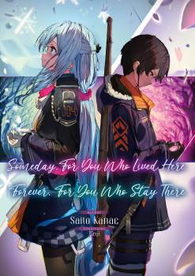

Someday, for You Who Lived Here or Forever, for You Who Stay There
Novel Info's
Status: Completed
Genre: Action, Drama, Romance, Tragedy
Author: Saito Kanae
Illustrator: Enji
Volumes: 1
Original Publisher: Dangeki Bunko & Kadokawa
English Publisher: N/A
Fan Translation: Nightcore Novels
Description/Sypnosis
This is a story of ‘the end.’ It is a tragic tale of two people who cared for each other.
The young soldier Lenka saw a miracle that day.
It was snowing in the spring. Snow fell on the bloody frontlines, freezing all enemies.
The girl who performed this miracle was called the ‘Saint of the Ice Coffin.’
Lenka and the girl met by chance. The changing circumstances of the war and the days of peace in between—little by little, they grew closer.
However, they forgot.
That the boy was ‘just a soldier.’
That the girl was an ‘absolute weapon.’
This is the story of a foolish boy and a not-so-happy girl’s encounter and their parting.
Download Links
Epub & Pdf